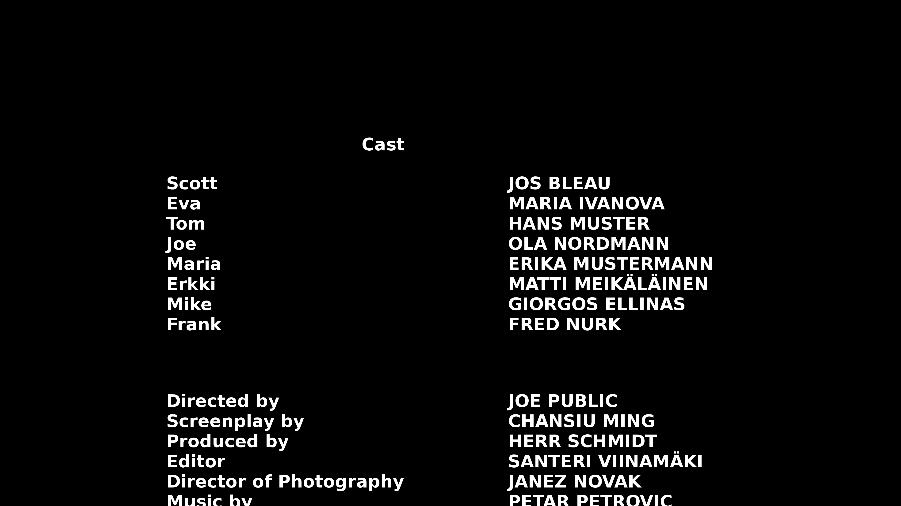
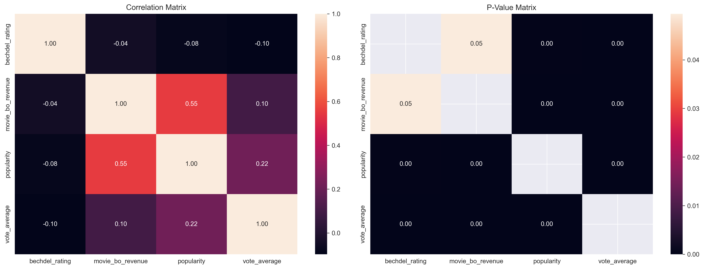

by Kenji Tetard, Aymeric Bacuet, Naël Dillenbourg, François Dumoncel, Lena Vogel
Towards a new era in the film industry?
Through the feminist struggles and the recent advances in gender equality, women have gained
space and
importance in movies.
Indeed, the cinema industry has long been a mirror reflecting societal norms and
changes,
and this is especially relevant for the representation of women.
Looking at the Cannes
Film
Festival, a prestigious sphere for cinematic
excellence, change is palpable. This year, a striking 7 out of 21 films
competing
for the top
prize are helmed by women (1/3). Cast your mind back to 1995, and the contrast is stark: a
mere 2
out
of 24 (1/12). This
shift is more than just numbers; it's a testament to the slow but sure march towards gender
parity in
filmmaking.
Moreover, it is easy to see that movies, TV shows and other forms of art talk more and more
about women
realities, letting the archaic
male-gaze in the past. However, like any great story, this
one
too has its
conflicts. Stereotypes and inequalities stubbornly persist in the industry, reminding us
that
our quest for
true equality is not over.
Let's embark on a journey of discovery together. In this study, we'll delve into the
gendered dynamics
at play in the film industry. Our guide? The CMU Movie Corpus dataset, a dataset of
thousands of
movies released between in the 20th and 21st centuries. To start, let us show you a first
insight on the
cleaned dataset
we are working with, look at the graph below which tracks the evolution of the 9,146 movie
releases
through the years.
See? There are very few movies before 1980, this is why for the visual simplicity of
future
graphs which represent values per year, we will restrain the years range to the 30 years
between
1980 and 2010 only.
Transitioning from our temporal exploration of movie releases to the geographical
dimension,
we uncover another layer of the film industry's story. Let's pivot our focus to the global
map,
where the geographical origins of these movies paint a vivid picture of industry trends and
cultural
dominance.
The map we showed highlights a clear bias: a vast majority of the movies between
1980-2010 originate
from the United States and Europe. This concentration indicates a Western-centric dominance
in the
film industry, both in terms of quantity and cultural influence, or more likely a bias in our dataset.
This geographical bias in our dataset, evident in the distribution of movie production, is a
crucial factor
to bear in mind as we proceed with our future analyses, ensuring a nuanced understanding
of the film industry's landscape.
First, we could ask ourselves the following question: "Are there more women actresses
who
play
characters in movies now than before?"
That is interesting! From 1980 to 2010, the proportion of women actresses compared to
men
increased of a few percents! It is not a huge increase, but it still is considerable.
We'll have to investigate more on that and the potential causes for this increase, as well
as
whether when
women are more represented, it also imply they are better represented or
not.
Part I : What influence the presence of
actress ?
In our journey to understand the role of women in the film industry, we first delve into
the proportion
of female actresses in movies. This exploration is only based on the data we have, without
of correlating
changes in the industry with broader historical events.
A natural question arises: how do the roles of movie directors and producers influence this
proportion?
To answer this, let's look at the gender breakdown among these influential figures.
Observing the surprisingly low proportion of female directors, even more so than producers,
prompts us to examine how these figures have evolved over the years.
Interestingly, the proportion of female directors has remained relatively constant, showing
minimal change over time. But what about the producers?
Similarly, the trend for female producers mirrors that of directors — consistent but modest
representation. This leads us to an intriguing aspect: is there a correlation between the
presence of female directors and producers and the proportion of female actresses?
Against the backdrop of these low proportions, we find a silver lining. There appears to be
a positive correlation between the proportion of actresses and the involvement of female
directors or producers. Notably, when both the director and producer are women, the
proportion of actresses tends to be even higher. Statistical t-tests confirm this
correlation, revealing significant \(p\)-values of \(10^{-4}\) for female producers,
\(1.76\times10{-23}\) for female directors, and \(2.66\times10{-15}\) when both roles are
occupied by women.
But there's more to the story. How does this representation vary across different movie
genres?
Movie Genres and Gender Distribution
The plot above reveals significant variations in gender distribution across movie genres.
Actresses are more prominent in genres like LGBT, Drama, and Romance,
while they are less represented in Action or Crime movies.
The insights gained from our analysis paint a multifaceted picture of women's
representation in movies. While female directors and producers are few,
their presence correlates with a higher proportion of female actors. This correlation
is further nuanced by the genre of the movie, indicating that the battle for
gender balance in the film industry is influenced by various factors, including the
type
of movies being made. As we continue to advocate for more balanced and diverse
representation in
cinema, these findings underscore the importance of female leadership in shaping the
narrative and presence of women on screen.
Part II : Representation matters but is it
enough ?
Now is time to evaluate the quality of the representation of women in the film
industry!
Actors age
First, we will look at the evolution of the age of male and female actors. Why? Simply
because
young women are generally prefered than old women, while we are supposed to appreciate men
at
every age.
Well well well... The median age of male actors remains higher than that of female actors
throughout the observed period, reflecting a persistent age gap.
This trend could be indicative of industry preferences or casting practices that tend to
favor different age profiles for male and female roles.
While actress are casted at the age of around 30 while the median for actors is 40.
This does set very different standards contributing to the stereotype that age has more
negatives consequences
for the evaluation of women compared to men.
Actors roles

Santeri Viinamäki,
Example
movie end credits, marked as public domain, more details on Wikimedia
Commons
As we analyse the distribution of actress in movies we should also take a deep dive into
what they play. As this may be very well contribute to stereotypes on screen.
We scraped the role played by thousands of actors in movies and classified their role into
several categories. This helps us understand what kind of character they play.
Actors are credited in movies as several categories.
Some roles have names in the scenario, some only have job duties.
We translate theses categories to four level of importance, with more important characters
having names
and less charachter only being in a relationship with a named character or worse, with an
unnamed character.
How does gender impact these different categories ?
Let's have a look at the roles credited as a job! We do see that overwelming majority of
roles are played by
actors for the two first categories. However, we observe that it's not the case for
roles that are
further away from the main characters have a higher number of actress.
Let's look at what all of these roles are!
Our first question is: What's the most common jobs played by actors and actresses?
We find some roles which describe their position in the family.
Theses roles were not classified by our NLP as supporting role to a named
character as they may simply be label as "The grandmother" and not "Ted's grandmother".
We observe that for the roles that are not describing their position in the family,
actress have roles such as nurse, waitress, receptionist... while men seem to have
higher status roles such as doctors, cops/sheriff, owner, reporter, priest...
Let's take a closer look at who plays nurses and doctors.
So doctors are overwhelmingly played by men while nurses are mostly
played by women. How does it compare to reality ?
Let's compare it to the 2008 U.S. Bureau of Labor Statistics.
In the statistics, 68% of doctors are men, compared to 82% of unnamed doctors
character's in movies. While for nurse, 90% of registered nurses are women,
in movies it's 72%.
So, while not a perfectly identical to the gender gap in our society, we find a heavy
bias in
how the roles are casted. Let's check if this is evolving through time:
While we do see that movies in 2010s seem to completely differ from the other decades,
this first look at the data seems to indicate less bias in recent years.
Let's check how other professions are doing.
Especially who plays jobs with a perceived higher social status ?
For instance: looking at the gender distribution of teachers and professors.
One job title: professor is linked to higher education and seems to be a role heavily
played by men,
while the other: teacher is played by both actor and actresses.
For a few of the jobs listed in the most common roles, we find that most of them are heavily
gendered.
As we have a small number of roles played for each job, we will attempt to have a look at
the bigger picture.
Let's agregate some data using a useful metric.
If women play roles of jobs with a lower social status, what does their fictional average
salary would look like?
We used the data from the May 2022 National Occupational Employment and
Wage Estimates to estimate the average salary of the jobs played by actors and actresses.
First thing we observe in the above distributions is an almost identical median for both
genders!
But we do observe some differences, as we can see that low-wages jobs are
mostly acted by women while actors are casted to high paying jobs.
We also find what we could call a glass ceiling as the maximum salary for jobs
played by actress corresponds to the upper quartile of the men's job.
We will now take a peak at the 10 most played supporting role,
credited in a relationship to a named character.
We see similar roles, unsurprisingly, most of them are family members to a named character
but for the roles that are not, we notice again that
they include lawyer and doctor for actor's role and secretary for the women's role...
So again, it's the same story here !
We will not look at the supporting roles credited as in a relationship with a person
characterized by their job, as they represent too few examples.
So, what did we find ?
In summary, the contrast in the roles given to actors and actresses reflect common gender
stereotypes in storytelling and media,
where men are often associated with higher social status jobs, power, authority and
action,
while women are often portrayed as a relationship or play highly gendered jobs in
their roles.
This is a useful piece of the puzzle on how stereotypes are conveyed in movies productions.
Bechdel Test
Have you ever heard of the Bechdel Test? It's a set of criteria that a film must
meet
to be
considered minimally adequate in representing women.
Popularized by Alison
Bechdel
back in 1985 (the original
illustration is shown on the right),
the test is incredibly simple:
There must be at least two named women in the film;
They must talk to each other;
About something other than a man.
Sounds easy, right? In an ideal world, every film would effortlessly pass this
test.
Yet, the
reality is a bit more complex...
We've managed to gather Bechdel Score data for 2,658 films, thanks to the API
from
the Bechdel Test website. It is important
to
note
that anyone can enter data on whether a film passes the Bechdel Test or not, on
a
scale to 0 to 3.
The lingering question remains: Has the Bechdel Test influenced the
audience's
perception and the representation of women in the film industry?
Bechdel, Alison. To Watch Out For.
1985
Imagine how different the cinematic landscape could be if more films met these criteria.
What do
you think? Do films that pass the Bechdel Test tend to resonate more with audiences, or
is
the
impact more subtle, perhaps reflected in the gradual evolution of female roles in
cinema?
Let's
delve into this intriguing topic together.
But first, an important consideration: we need to be cautious with those data, because not
all movies from the CMU Dataset
have
been evaluated by the Bechdel test (only between 20 and 140 per year between 1980 and 2010).
We should also consider that there is a bias on the set
of movies that were entered by hand in this Bechdel dataset and also add that, while the
Bechdel test can be a useful initial indicator of female
presence in films, it is not a comprehensive measure of a film's portrayal of
women.
So let's start this analysis,
by looking at the evolution
of the proportion of movies that passed the test:
There is quite an increase in the mean proportion of movies that pass the Bechdel test!
(slope is 0.005)
Even though the proportion of movies that pass the test is still low, it is encouraging to
see it increase over time.
Now, do you think that movies with higher Bechdel rating involve more women ?
Here, it is obvious that a higher Bechdel rating typically indicates a greater percentage of
actresses (around 24% difference for movies which completely pass the Bechdel test compared
to the
ones
that do not), this is a result we could reasonabily have expected, considering the
test's inherent design. But still, let's not take any shortcut! It is not because women are
present that they have interesting roles nor their own plot.
So movies with higher number of actress tends
to have
a higher Bechdel rating.
Part III: From the Seats: Audience
Perspectives.
But then, let’s answer the question: is it clickbait? Does it contribute to the
popularity of the movie? Or even to the revenue?
Firstly, we'll take 2 metrics: the popularity of the movie, which is a score determined
here by TMDB,
and the rating of the movie.
There's an intriguing pattern in these glitzy displays: movies that only score 1 at the
Bechdel test are often the most popular ones. Why is
this so? The answers aren't straightforward. This could be multiple confounder into this
complex
tapestry. It could be that the film
industry, with its influential might, chooses to shine a brighter spotlight on movies
where
male characters take the center stage, and where women only are... present.
Or perhaps, the audience, like a river, naturally flows towards the stories
echoing a significant male
presence. So is it the chicken or the egg?
Let's see if we can find any pattern between the percentage of actresses and the rating:
A friend to the rescue: Matching
Let's do something new ! Have you ever heard about Matching ? It's a relatively new concept
in statistics,
popularized by Donald Rubin in the 1980s. You can think of Matching as your trusty sidekick
in reducing bias when estimating treatment effects in observational studies. Here's the
challenge: for every treated unit in your study, you need to find one or more non-treated
units. But not just any units will do. These counterparts must be similar in observable
characteristics, creating a perfect balance against which the covariates are evenly matched.
Here, we will perform exact one-to-one matching, based on the main genre of the movie.
By comparing movies within these genre-matched pairs, we hope to accurately assess the
impact of genre on both Bechdel Ratings and audience popularity. This controlled comparison
helps isolate the variable of genre, allowing for a clearer understanding of its role. We
will have two groups
Treatment Group: Movies from a genre that typically scores high on the
Bechdel
test.
Control Group: Movies from a genre that typically scores low on the Bechdel
test.
Doing this on our dataset, we get 880 pairs of matched movies! Let's see what we can learn
from
this.
We want to know if the Bechdel rating plays a role in the popularity of a movie. So, let's
try
to estimate the following linear regression popularity ~ bechdel_rating. We obtain that
It seems that the Bechdel rating and the popularity are negatively correlated.
Interesting, isn't it ? In fact... not really. What is important to mention is also the
\(p\)-value of these coefficients. It turns out that
the \(p\)-value of the \(\texttt{bechdel_rating}\) is \(0.450\), which means that the value
of
\(\beta_1\)
is not
statistically significant. Therefore, we can not state that the Bechdel rating
impacts a movie's
popularity,
and as a result, producers should not have any reason to be concerned with it.
Let's now look at the correlation directly between the Bechdel rating and the
popularity,
the box-office revenue and the vote average.

The heatmap on the right is showcasing the \(p\)-values linked with correlation
coefficients from the left heatmap. All these values are between \(0.00\) and \(0.05\).
This
tiny
detail is crucial. The patterns you see on the left
heatmap aren't mere coincidences. They're statistically significant!
Let's focus back on the left heatmap. Here, the coefficients are quantified on a scale
from
-1 to 1. Imagine this scale as a spectrum. At one end, -1 signals a perfectly inverse
correlation, like two dancers moving in opposite directions. At the other end, 1
suggests a
perfectly direct correlation, akin to synchronized swimmers moving in harmony. And in
the
middle, 0 stands for no correlation, like independent artists painting in their own
styles.
Now, here's the twist. Despite the beautiful array of data, the correlations are
generally weak. This subtly hints that the Bechdel test ratings have a minimal
direct impact on a
movie’s financial success at the box office and its acceptance by the general public.
This means that producers and film directors allow themselves to not adhere to the
Bechdel test as it does not influence them in any way, which would give no monetary benefits
to make movies that pass the Bechdel test or even reducde difference in
proportion between actresses and actors.
One step back: how about ethics ?
During all this analysis, we used an open source dataset without putting an emphasis on the ethical and moral responsibilities.
Now, we need
to navigate the complex ethical questions raised in our analysis with four guiding "ethical
lenses": beneficence, non-maleficence, privacy, and fairness.
As we saw, our insights could
potentially reshape how producers and directors approach actor recruitment.
But this needs to be done carefully. Consider the
Bechdel test – while its impact might seem limited, overlooking it could encourage sexist
behaviors in the industry.
Now, turn to privacy. We're handling sensitive data, laden with personal details of
actors. How do we protect their identities? The solution could lie in sophisticated
techniques like \(k\)-anonymity or \(\epsilon\)-differential privacy, ensuring insights without invasion.
Finally, the lens of fairness invites you to ponder deeper. Our data analysis holds
power – the power to influence perceptions and decisions. It's crucial to wield this
power judiciously, ensuring our conclusions don't perpetuate discrimination, especially
against women in the industry.
Conclusion
So what did we learn?
First and foremost, it’s not tomorrow that we will achieve gender equality in the acting world.
We are far from a 50/50 ratio, and it may take decades.
We did observe that the proportion of actors/actresses in a movie was correlated with the
gender of the director and the producer. This may be a good lead in order to fast track
gender equality in the industry.
The deep analysis of the roles assigned to the characters allowed us to see that men and
women generally play stereotypical roles. This does tell us that casting more actress is not
enough! We need better roles in order not to reproduce patriarchal
stereotypes.
We also saw that the Bechdel test give us something to look forward to, as movies seem to
be passing increasingly!
Finally, we check how the audience felt about movies that passed or failed the Bechdel test
and we did not find that more “feminist” movies are unpopular.
We hope that this analysis gave a first glimpse of the gendered dynamics at play in the film
industry, and that it will encourage you to watch movies with a more critical
eye.

{kind=link}